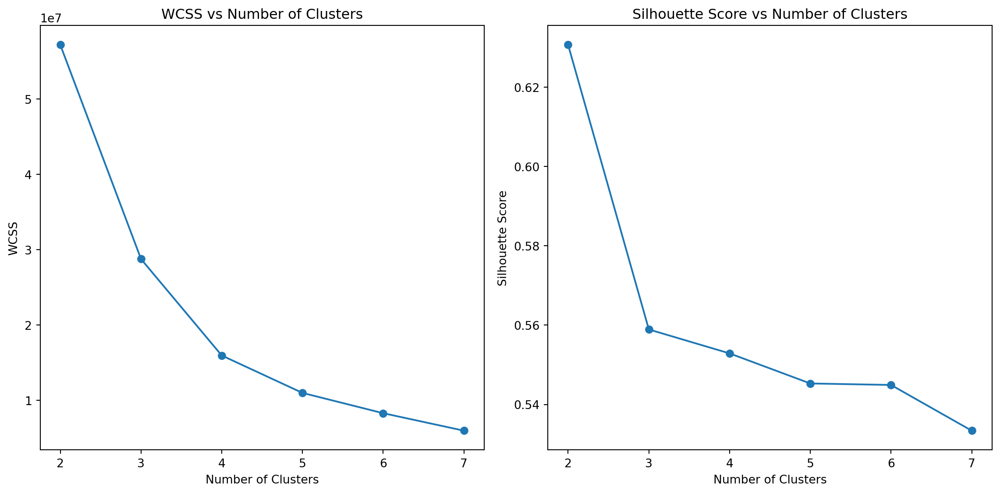
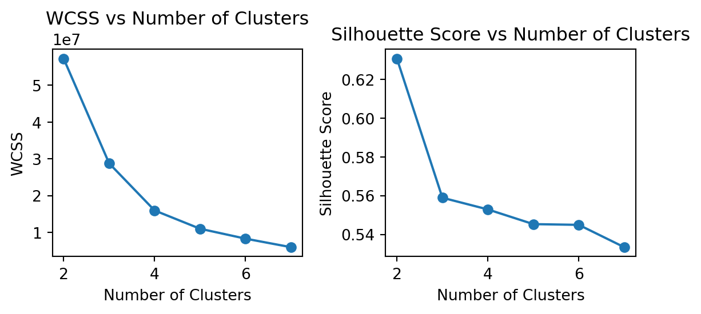
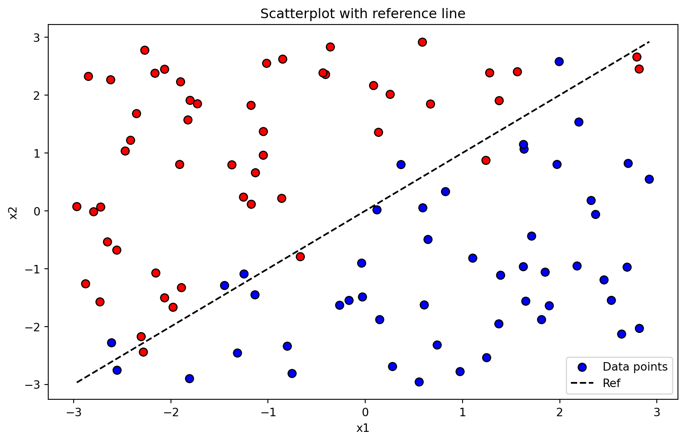
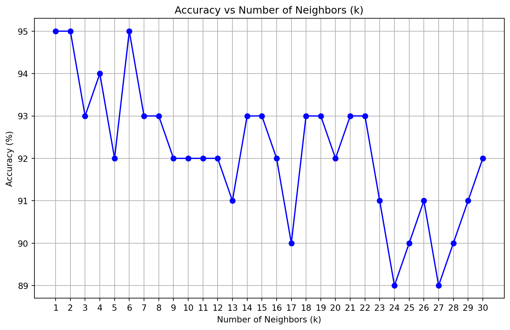

import pandas as pd
import scipy as sp
import numpy as np
import statsmodels.api as sm
import pyrsm as rsm
import matplotlib.pyplot as plt
from scipy.optimize import minimize
from sklearn.cluster import KMeansHomework 4: Machine Learning
Note
Note
# Load and read the CSV file
penguins_df = pd.read_csv('/home/jovyan/mysite/palmer_penguins.csv')
# Display the first few rows of the dataframe
print(penguins_df.head()) species island bill_length_mm bill_depth_mm flipper_length_mm \
0 Adelie Torgersen 39.1 18.7 181
1 Adelie Torgersen 39.5 17.4 186
2 Adelie Torgersen 40.3 18.0 195
3 Adelie Torgersen 36.7 19.3 193
4 Adelie Torgersen 39.3 20.6 190
body_mass_g sex year
0 3750 male 2007
1 3800 female 2007
2 3250 female 2007
3 3450 female 2007
4 3650 male 2007 1a. K-Means
As an initial step, I’m implementing my own code to run the k-means algorithm below, including plots of the various steps the algorithm takes.
def kmeans_f(data, k, max_iters=100):
np.random.seed(42)
# Randomly initialize centroids
centroids = data[np.random.choice(data.shape[0], k, replace=False)]
for i in range(max_iters):
# Assign clusters based on closest centroid
distances = np.linalg.norm(data[:, None] - centroids[None, :], axis=2)
labels = np.argmin(distances, axis=1)
# Update centroids
new_centroids = np.array([data[labels == cluster].mean(axis=0) for cluster in range(k)])
# Check for convergence
if np.all(centroids == new_centroids):
break
centroids = new_centroids
return labels, centroids
# Prepare the data for clustering
numerical_columns = ['bill_length_mm', 'bill_depth_mm', 'flipper_length_mm', 'body_mass_g']
data = penguins_df[numerical_columns].values
# Run the custom k-means algorithm
k = 3 # Number of clusters
labels, centroids = kmeans_f(data, k)
# Display the results
print("Cluster labels:", labels)
print("Centroids:", centroids)Cluster labels: [0 0 0 0 0 0 1 0 0 1 0 0 1 0 1 0 0 0 1 0 0 0 0 0 1 0 1 0 1 0 1 1 0 0 1 0 1
0 1 0 1 0 0 1 0 1 0 1 0 0 0 0 0 0 0 1 0 1 0 1 0 1 0 1 0 1 0 1 0 1 0 1 0 1
0 1 0 1 0 0 0 0 1 0 0 1 0 1 0 1 0 1 0 1 0 1 0 1 0 0 0 1 0 1 0 1 0 1 1 1 0
0 0 0 0 0 0 0 0 1 0 1 0 1 0 0 0 1 0 1 0 1 0 1 0 0 0 0 0 0 1 0 0 0 0 1 1 2
1 2 2 1 1 2 1 2 1 2 1 2 1 2 1 2 1 2 2 2 1 2 2 2 2 1 2 2 1 2 2 2 2 2 2 1 2
1 2 1 1 2 2 1 2 2 2 2 2 1 2 2 2 1 2 1 2 1 2 1 2 1 2 2 1 2 1 2 2 2 1 2 1 2
1 2 1 2 1 2 1 2 1 2 2 2 2 2 1 2 2 2 2 2 1 2 2 2 2 2 2 1 2 1 2 2 2 1 2 1 2
2 2 2 2 2 2 0 1 0 0 0 1 0 0 1 0 0 0 0 1 0 1 0 0 0 1 0 0 0 0 0 1 0 0 0 1 0
1 0 1 0 1 0 1 0 1 1 0 0 0 0 1 0 1 0 0 0 1 0 1 0 0 0 1 0 0 1 0 0 1 0 0 1 0]
Centroids: [[ 41.12214286 17.94642857 189.62857143 3461.25 ]
[ 44.24336283 17.44778761 201.54867257 4310.61946903]
[ 48.6625 15.3975 219.9875 5365.9375 ]]
Note
# Select the bill length and flipper length columns for clustering
selected_columns = ['bill_length_mm', 'flipper_length_mm']
data_selected = penguins_df[selected_columns].values
# Run the custom k-means algorithm
labels_selected, centroids_selected = kmeans_f(data_selected, k)
# Display the results
print("Cluster labels (selected columns):", labels_selected)
print("Centroids (selected columns):", centroids_selected)Cluster labels (selected columns): [0 0 2 0 0 0 2 0 0 2 0 2 2 0 2 0 0 0 0 0 0 0 0 0 0 0 0 0 0 0 2 0 0 0 0 0 2
0 2 0 0 0 0 0 0 0 0 2 0 0 0 0 0 0 0 2 0 0 0 0 0 0 0 2 0 0 2 2 0 2 0 0 0 2
0 2 0 0 0 2 0 0 0 0 2 2 0 0 0 1 0 2 0 2 0 2 0 0 0 0 2 0 0 2 2 2 0 2 0 2 0
2 0 0 0 2 0 2 0 2 0 2 0 1 0 2 0 2 0 0 0 2 0 0 0 0 0 0 0 0 0 0 0 0 0 2 1 1
1 1 1 1 1 1 1 1 1 1 1 1 1 1 1 1 1 1 1 1 1 1 1 1 1 1 1 1 1 1 1 1 1 1 1 1 1
1 1 1 1 1 1 1 1 1 1 1 1 1 1 1 1 1 1 1 1 1 1 1 1 1 1 1 1 1 1 1 1 1 1 1 1 1
1 1 1 1 1 1 1 1 1 1 1 1 1 1 1 1 1 1 1 1 2 1 1 1 1 1 1 1 1 1 1 1 1 1 1 1 1
1 1 1 1 1 1 2 2 2 0 2 2 0 2 2 2 2 2 0 2 2 2 2 2 2 2 0 2 0 2 2 2 2 2 2 2 0
2 0 2 2 2 2 1 2 2 1 0 2 2 2 2 2 1 2 2 2 2 2 2 0 2 2 2 2 2 2 2 2 1 2 2 1 2]
Centroids (selected columns): [[ 38.45304348 187.05217391]
[ 47.6296 216.92 ]
[ 45.95483871 196.7311828 ]]# Perform clustering using the built-in KMeans function
kmeans = KMeans(n_clusters=k, random_state=42)
kmeans.fit(data)
# Compare cluster labels and centroids
print("Built-in KMeans cluster labels:", kmeans.labels_)
print("Built-in KMeans centroids:", kmeans.cluster_centers_)
# Compare with custom implementation
print("Custom KMeans cluster labels:", labels)
print("Custom KMeans centroids:", centroids)Built-in KMeans cluster labels: [0 0 0 0 0 0 2 0 0 2 0 0 2 0 2 0 0 0 2 0 0 0 0 0 2 0 2 0 2 0 2 2 0 0 2 0 2
0 2 0 2 0 0 2 0 2 0 2 0 0 0 0 0 0 0 2 0 2 0 2 0 2 0 2 0 2 0 2 0 2 0 2 0 2
0 2 0 2 0 0 0 0 2 0 0 2 0 2 0 2 0 2 0 2 0 2 0 2 0 0 0 2 0 2 0 2 0 2 2 2 0
0 0 0 0 0 0 0 0 2 0 2 0 2 0 0 0 2 0 2 0 2 0 2 0 0 0 0 0 0 2 0 0 0 0 2 2 1
2 1 1 2 2 1 2 1 2 1 2 1 2 1 2 1 2 1 1 1 2 1 1 1 1 2 1 1 2 1 1 1 1 1 1 2 1
2 1 2 2 1 1 2 1 1 1 1 1 2 1 1 1 2 1 2 1 2 1 2 1 2 1 1 2 1 2 1 1 1 2 1 2 1
2 1 2 1 2 1 2 1 2 1 1 1 1 1 2 1 1 1 1 1 2 1 1 1 1 1 1 2 1 2 1 1 1 2 1 2 1
1 1 1 1 1 1 0 2 0 0 0 2 0 0 2 0 0 0 0 2 0 2 0 0 0 2 0 0 0 0 0 2 0 0 0 2 0
2 0 2 0 2 0 2 0 2 2 0 0 0 0 2 0 2 0 0 0 2 0 2 0 0 0 2 0 0 2 0 0 2 0 0 2 0]
Built-in KMeans centroids: [[ 41.12214286 17.94642857 189.62857143 3461.25 ]
[ 48.6625 15.3975 219.9875 5365.9375 ]
[ 44.24336283 17.44778761 201.54867257 4310.61946903]]
Custom KMeans cluster labels: [0 0 0 0 0 0 1 0 0 1 0 0 1 0 1 0 0 0 1 0 0 0 0 0 1 0 1 0 1 0 1 1 0 0 1 0 1
0 1 0 1 0 0 1 0 1 0 1 0 0 0 0 0 0 0 1 0 1 0 1 0 1 0 1 0 1 0 1 0 1 0 1 0 1
0 1 0 1 0 0 0 0 1 0 0 1 0 1 0 1 0 1 0 1 0 1 0 1 0 0 0 1 0 1 0 1 0 1 1 1 0
0 0 0 0 0 0 0 0 1 0 1 0 1 0 0 0 1 0 1 0 1 0 1 0 0 0 0 0 0 1 0 0 0 0 1 1 2
1 2 2 1 1 2 1 2 1 2 1 2 1 2 1 2 1 2 2 2 1 2 2 2 2 1 2 2 1 2 2 2 2 2 2 1 2
1 2 1 1 2 2 1 2 2 2 2 2 1 2 2 2 1 2 1 2 1 2 1 2 1 2 2 1 2 1 2 2 2 1 2 1 2
1 2 1 2 1 2 1 2 1 2 2 2 2 2 1 2 2 2 2 2 1 2 2 2 2 2 2 1 2 1 2 2 2 1 2 1 2
2 2 2 2 2 2 0 1 0 0 0 1 0 0 1 0 0 0 0 1 0 1 0 0 0 1 0 0 0 0 0 1 0 0 0 1 0
1 0 1 0 1 0 1 0 1 1 0 0 0 0 1 0 1 0 0 0 1 0 1 0 0 0 1 0 0 1 0 0 1 0 0 1 0]
Custom KMeans centroids: [[ 41.12214286 17.94642857 189.62857143 3461.25 ]
[ 44.24336283 17.44778761 201.54867257 4310.61946903]
[ 48.6625 15.3975 219.9875 5365.9375 ]]Comparison of results:
Both the custom kmeans_f function and the built-in sklearn.cluster.KMeans function produce identical centroids and cluster labels for the full dataset (data). This indicates that the custom implementation is correctly replicating the behavior of the built-in function for clustering.
However, when clustering is performed on the selected columns (data_selected), the cluster labels and centroids differ between the two implementations. This discrepancy may arise due to differences in initialization, convergence criteria, or handling of the reduced dimensionality in the custom implementation compared to the built-in function.
Calculation of the within-cluster-sum-of-squares and silhouette scores.
Note
from sklearn.metrics import silhouette_score
# Initialize lists to store WCSS and silhouette scores
wcss = []
silhouette_scores = []
# Range of cluster numbers to evaluate
cluster_range = range(2, 8)
for k in cluster_range:
# Perform clustering using KMeans
kmeans = KMeans(n_clusters=k, random_state=42)
kmeans.fit(data)
# Calculate WCSS
wcss.append(kmeans.inertia_)
# Calculate silhouette score
score = silhouette_score(data, kmeans.labels_)
silhouette_scores.append(score)
# Plot WCSS and silhouette scores
plt.figure(figsize=(12, 6))
# Plot WCSS
plt.subplot(1, 2, 1)
plt.plot(cluster_range, wcss, marker='o')
plt.title('WCSS vs Number of Clusters')
plt.xlabel('Number of Clusters')
plt.ylabel('WCSS')
# Plot silhouette scores
plt.subplot(1, 2, 2)
plt.plot(cluster_range, silhouette_scores, marker='o')
plt.title('Silhouette Score vs Number of Clusters')
plt.xlabel('Number of Clusters')
plt.ylabel('Silhouette Score')
plt.tight_layout()
plt.show()
#The "right" number of clusters can be determined by:
#1. The "elbow" point in the WCSS plot, where the reduction in WCSS slows down significantly.
#2. The peak of the silhouette score plot, indicating the highest average silhouette score.
# Plot WCSS and silhouette scores
plt.figure(figsize=(6, 3))
# Plot WCSS
plt.subplot(1, 2, 1)
plt.plot(cluster_range, wcss, marker='o')
plt.title('WCSS vs Number of Clusters')
plt.xlabel('Number of Clusters')
plt.ylabel('WCSS')
# Plot silhouette scores
plt.subplot(1, 2, 2)
plt.plot(cluster_range, silhouette_scores, marker='o')
plt.title('Silhouette Score vs Number of Clusters')
plt.xlabel('Number of Clusters')
plt.ylabel('Silhouette Score')
plt.tight_layout()
plt.show()
The “right” number of clusters can be determined by: 1. The “elbow” point in the WCSS plot, where the reduction in WCSS slows down significantly. 2. The peak of the silhouette score plot, indicating the highest average silhouette score.
2a. K Nearest Neighbors
# gen data -----
set.seed(42)
n <- 100
x1 <- runif(n, -3, 3)
x2 <- runif(n, -3, 3)
x <- cbind(x1, x2)
# define a wiggly boundary
boundary <- sin(4*x1) + x1
y <- ifelse(x2 > boundary, 1, 0) |> as.factor()
dat <- data.frame(x1 = x1, x2 = x2, y = y)The Python code equivalent is outlined below. :::: {.callout-note collapse=“true”}
# Set seed for reproducibility
np.random.seed(42)
# Generate data
n = 100
x1 = np.random.uniform(-3, 3, n)
x2 = np.random.uniform(-3, 3, n)
# Define a wiggly boundary
boundary = np.sin(4 * x1) + x1
# Determine binary outcome variable
y = np.where(x2 > boundary, 1, 0)
# Create a DataFrame
dat = pd.DataFrame({'x1': x1, 'x2': x2, 'y': y})
# Display the first few rows of the dataset
print(dat.head()) x1 x2 y
0 -0.752759 -2.811425 0
1 2.704286 0.818462 0
2 1.391964 -1.113864 0
3 0.591951 0.051424 0
4 -2.063888 2.445399 1::::
Data plot with x1 on horizontal axis and x2 on vertical axis, color lables based on Y value.
plt.figure(figsize=(10, 6))
# Scatter plot of the data points
plt.scatter(dat['x1'], dat['x2'], c=dat['y'], cmap='bwr', edgecolor='k', s=50, label='Data points')
# Plot the reference line with a slope of 1
x_ref = np.linspace(dat['x1'].min(), dat['x1'].max(), 100)
y_ref = x_ref # y = x for slope of 1
plt.plot(x_ref, y_ref, color='black', linestyle='--', label='Ref')
# Add labels and legend
plt.xlabel('x1')
plt.ylabel('x2')
plt.title('Scatterplot with reference line')
plt.legend()
plt.show()
Test dataset with 100 points, using a different seed for reproducibility.
Note
# Set a different seed for reproducibility
np.random.seed(123)
# Generate test data
n_test = 100
x1_test = np.random.uniform(-3, 3, n_test)
x2_test = np.random.uniform(-3, 3, n_test)
# Define a wiggly boundary for the test dataset
boundary_test = np.sin(4 * x1_test) + x1_test
# Determine binary outcome variable for the test dataset
y_test = np.where(x2_test > boundary_test, 1, 0)
# Create a DataFrame for the test dataset
test_dat = pd.DataFrame({'x1': x1_test, 'x2': x2_test, 'y': y_test})
# Display the first few rows of the test dataset
print(test_dat.head()) x1 x2 y
0 1.178815 0.078769 0
1 -1.283164 0.999747 1
2 -1.638891 -2.364549 0
3 0.307889 -2.214630 0
4 1.316814 -1.068116 0Custom KNN implementation
Note
from collections import Counter
from sklearn.neighbors import KNeighborsClassifier
from sklearn.metrics import accuracy_score
# Custom KNN implementation
def knn_predict(X_train, y_train, X_test, k):
predictions = []
for test_point in X_test:
# Calculate distances from the test point to all training points
distances = np.linalg.norm(X_train - test_point, axis=1)
# Find the k nearest neighbors
nearest_indices = np.argsort(distances)[:k]
nearest_labels = y_train[nearest_indices]
# Predict the label based on majority vote
most_common = Counter(nearest_labels).most_common(1)[0][0]
predictions.append(most_common)
return np.array(predictions)
# Prepare training and test data
X_train = dat[['x1', 'x2']].values
y_train = dat['y'].values
X_test = test_dat[['x1', 'x2']].values
y_test = test_dat['y'].values
# Set the number of neighbors
k_neighbors = 5
# Predict using custom KNN
custom_knn_predictions = knn_predict(X_train, y_train, X_test, k_neighbors)
# Predict using scikit-learn's KNeighborsClassifier
knn = KNeighborsClassifier(n_neighbors=k_neighbors)
knn.fit(X_train, y_train)
sklearn_knn_predictions = knn.predict(X_test)
# Compare predictions
print("Custom KNN Accuracy:", accuracy_score(y_test, custom_knn_predictions))
print("Scikit-learn KNN Accuracy:", accuracy_score(y_test, sklearn_knn_predictions))Custom KNN Accuracy: 0.92
Scikit-learn KNN Accuracy: 0.92Finally, running the function for k=1,…,k=30 and plotting the percentage of correctly-classified points from the test dataset.
Note
# Initialize lists to store k values and accuracy scores
k_values = range(1, 31)
accuracy_scores = []
# Loop through k values from 1 to 30
for k in k_values:
# Predict using custom KNN
predictions = knn_predict(X_train, y_train, X_test, k)
# Calculate accuracy
accuracy = accuracy_score(y_test, predictions)
accuracy_scores.append(accuracy * 100) # Convert to percentage
# Plot the results
plt.figure(figsize=(10, 6))
plt.plot(k_values, accuracy_scores, marker='o', linestyle='-', color='blue')
plt.title('Accuracy vs Number of Neighbors (k)')
plt.xlabel('Number of Neighbors (k)')
plt.ylabel('Accuracy (%)')
plt.xticks(k_values)
plt.grid(True)
plt.show()
# Initialize lists to store k values and accuracy scores
k_values = range(1, 31)
accuracy_scores = []
# Loop through k values from 1 to 30
for k in k_values:
# Predict using custom KNN
predictions = knn_predict(X_train, y_train, X_test, k)
# Calculate accuracy
accuracy = accuracy_score(y_test, predictions)
accuracy_scores.append(accuracy * 100) # Convert to percentage
# Plot the results
plt.figure(figsize=(10, 6))
plt.plot(k_values, accuracy_scores, marker='o', linestyle='-', color='blue')
plt.title('Accuracy vs Number of Neighbors (k)')
plt.xlabel('Number of Neighbors (k)')
plt.ylabel('Accuracy (%)')
plt.xticks(k_values)
plt.grid(True)
plt.show()
The optimal value of k as suggested by the plot is 1, 2, or 6, as these values yield the highest accuracy of 95%.